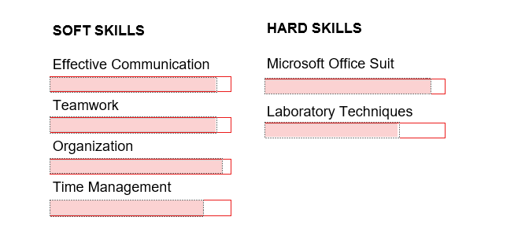

Skills & Hobbies
Proficient in a wide range of laboratory techniques, adept at data analysis and interpretation, and possessing strong communication and teamwork skills essential for collaborative research environments.

Beyond my academic pursuits, I am highly motivated individual with a diverse range of interests. I am passionate about scientific literature review, which allows me to further explore the complexities of biological systems. I also volunteer at science events to fulfill my passion for science outreach and engagement.I enjoy playing the keyboard & listening to music, which cultivates creativity and attention to detail. These hobbies not only provide a refreshing counterpoint to my scientific endeavors but also enhance my problem-solving, analytical, and collaborative abilities, making me a well-rounded and adaptable individual.
My Curriculum Vitae
To know more about my academics, practical skills & qualifications, you can download my curriculum vitae here.